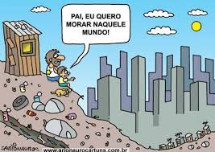
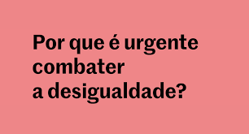

O que é Desigualdade Social?
Desigualdade social refere-se às diferenças no acesso a recursos, oportunidades e direitos entre diferentes grupos sociais. Essa desigualdade pode ser observada em termos de renda, educação, saúde, moradia e outros aspectos essenciais da vida.
Causas da Desigualdade Social

As causas da desigualdade social são multifacetadas, incluindo fatores econômicos, históricos, culturais e políticos. A história de colonização, escravidão e discriminação racial, por exemplo, tem um impacto duradouro nas estruturas sociais contemporâneas.
Impactos da Desigualdade Social
A desigualdade social tem efeitos profundos na sociedade, contribuindo para a perpetuação da pobreza, aumentando as taxas de criminalidade e reduzindo o acesso a oportunidades de educação e emprego. Ela também afeta a saúde física e mental das populações mais vulneráveis.
Desigualdade Social no Brasil
No Brasil, a desigualdade social é um problema persistente. As disparidades são evidentes em várias áreas, como acesso à educação, saúde, renda e moradia. A concentração de riqueza nas mãos de uma pequena elite agrava ainda mais essa situação.
Medidas para Combater a Desigualdade
Combater a desigualdade social requer políticas públicas eficazes, como a melhoria do sistema educacional, a promoção de empregos dignos e o acesso universal à saúde. Iniciativas de redistribuição de renda e programas sociais também são cruciais para reduzir essas disparidades.
O Papel da Educação
A educação desempenha um papel fundamental na redução da desigualdade social. Investir em educação de qualidade para todos é essencial para quebrar o ciclo de pobreza e criar oportunidades equitativas para as futuras gerações.